23 Time series analysis
A time series is a sequence of observations recorded at successive, usually equally spaced, points in time: monthly rainfall, annual crop production, weekly market arrivals or daily prices. The order of the observations matters, and neighbouring values are usually correlated, so time series need their own methods.
This chapter is adapted from A Little Book of R for Time Series by Avril Coghlan (Coghlan 2017) (CC BY 3.0), with additions. For a full treatment see R. J. Hyndman and Athanasopoulos (2021).
23.1 Data used in this chapter
Four data sets are used. They are in the data folder of the book’s GitHub repository, and can also be downloaded from the links below:
- kings.csv: age at death of 42 successive kings of England, starting with William the Conqueror.
- births.csv: number of births per month (in thousands) in New York City, January 1946 to December 1959.
- souvenir.csv: monthly sales of a souvenir shop at a beach resort town in Queensland, Australia, January 1987 to December 1993.
- rain.csv: total annual rainfall (inches) in London, 1813 to 1912.
The data originate from the Time Series Data Library of Rob Hyndman.
23.2 Creating a time series object
First import the data as in Chapter 5. Each file has a single column:
kings <- read.csv("data/kings.csv")$age
births <- read.csv("data/births.csv")$births
souvenir <- read.csv("data/souvenir.csv")$sales
rain <- read.csv("data/rain.csv")$rainfallNext store the data as a time series object with ts():
kingsts <- ts(kings)
kingsts#> Time Series:
#> Start = 1
#> End = 42
#> Frequency = 1
#> [1] 60 43 67 50 56 42 50 65 68 43 65 34 47 34 49 41 13 35 53 56 16 43 69 59 48
#> [26] 59 86 55 68 51 33 49 67 77 81 67 71 81 68 70 77 56For data collected more often than once a year, give the number of observations per year in frequency (12 for monthly, 4 for quarterly data) and the time of the first observation in start. For example, start = c(1986, 2) means the second quarter (or month) of 1986. The births data are monthly from January 1946:
#> Jan Feb Mar Apr May Jun Jul Aug Sep Oct Nov Dec
#> 1946 26.66 23.60 26.93 24.74 25.81 24.36 24.48 23.90 23.18 23.23 21.67 21.87
#> 1947 21.44 21.09 23.71 21.67 21.75 20.76 23.48 23.82 23.11 23.11 21.76 22.07
#> 1948 21.94 20.04 23.59 21.67 22.22 22.12 23.95 23.50 22.24 23.14 21.06 21.57
#> 1949 21.55 20.00 22.42 20.61 21.76 22.87 24.10 23.75 23.26 22.91 21.52 22.02
#> 1950 22.60 20.89 24.68 23.67 25.32 23.58 24.67 24.45 24.12 24.25 22.08 22.99
#> 1951 23.29 23.05 25.08 24.04 24.43 24.67 26.45 25.62 25.01 25.11 22.96 23.98
#> 1952 23.80 22.27 24.77 22.65 23.99 24.74 26.28 25.82 25.21 25.20 23.16 24.71
#> 1953 24.36 22.64 25.57 24.06 25.43 24.64 27.01 26.61 26.27 26.46 25.25 25.18
#> 1954 24.66 23.30 26.98 26.20 27.21 26.12 26.71 26.88 26.15 26.38 24.71 25.69
#> 1955 24.99 24.24 26.72 23.48 24.77 26.22 28.36 28.60 27.91 27.78 25.69 26.88
#> 1956 26.22 24.22 27.91 26.98 28.53 27.14 28.98 28.17 28.06 29.14 26.29 26.99
#> 1957 26.59 24.85 27.54 26.90 28.88 27.39 28.07 28.14 29.05 28.48 26.63 27.73
#> 1958 27.13 24.92 28.96 26.59 27.93 28.01 29.23 28.76 28.41 27.95 25.91 26.62
#> 1959 26.08 25.29 27.66 25.95 26.40 25.57 28.86 30.00 29.26 29.01 26.99 27.90Similarly for the souvenir sales and the annual rainfall:
23.3 Plotting time series
The first step in any analysis is a time plot, drawn with plot.ts():
plot.ts(kingsts, ylab = "Age at death", xlab = "King number")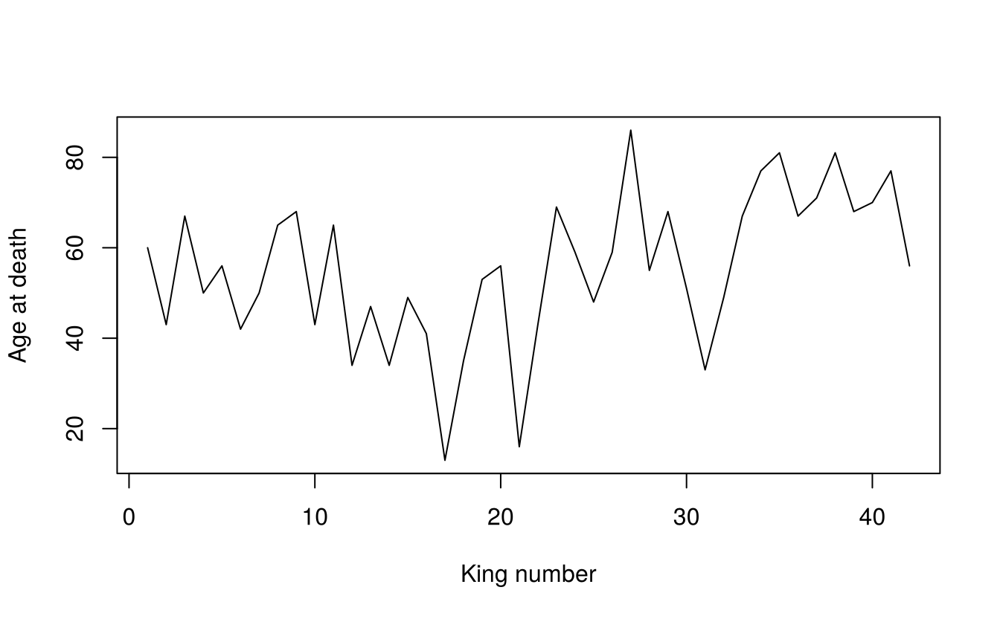
The random fluctuations in the kings’ ages are roughly constant in size over time, so an additive model is appropriate. In an additive model the components (trend, seasonal and irregular) are added together; this works when the size of the fluctuations does not change with the level of the series.
plot.ts(birthsts, ylab = "Births (thousands)")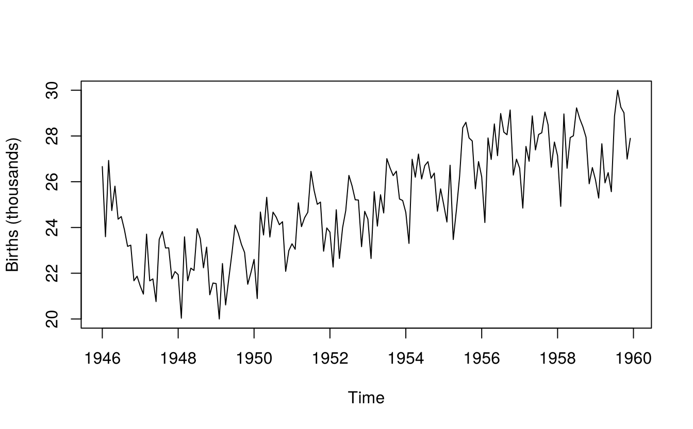
The births series shows clear seasonal variation, with a peak every summer and a trough every winter. The seasonal and random fluctuations are roughly constant in size, so an additive model is again appropriate.
plot.ts(souvenirts, ylab = "Sales")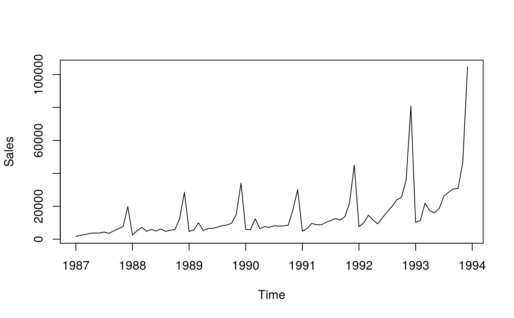
For the souvenir sales an additive model is not appropriate, because both the seasonal and the random fluctuations grow as the level of the series rises. Taking the natural logarithm often stabilises the variance:
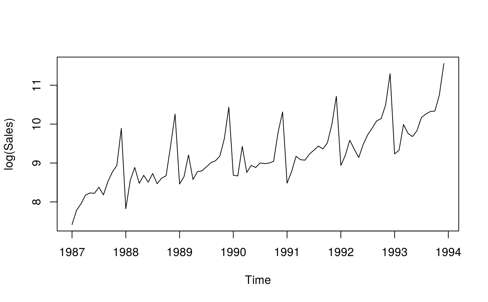
On the log scale the seasonal and random fluctuations are roughly constant in size, so the log series can be described by an additive model (equivalently, the original series follows a multiplicative model).
23.4 Decomposing time series
Decomposing a time series means separating it into its components:
- Trend component: the long-term upward or downward movement.
- Seasonal component: a pattern that repeats at a fixed period, such as every 12 months.
- Irregular (random) component: what remains after removing trend and seasonality.
Under the additive model \(Y_t = T_t + S_t + I_t\); under the multiplicative model \(Y_t = T_t \times S_t \times I_t\).
23.4.1 Decomposing non-seasonal data
A non-seasonal series has only a trend and an irregular component. The trend can be estimated by smoothing, for example with a simple moving average (SMA). The SMA() function of the TTR package computes it:
install.packages("TTR")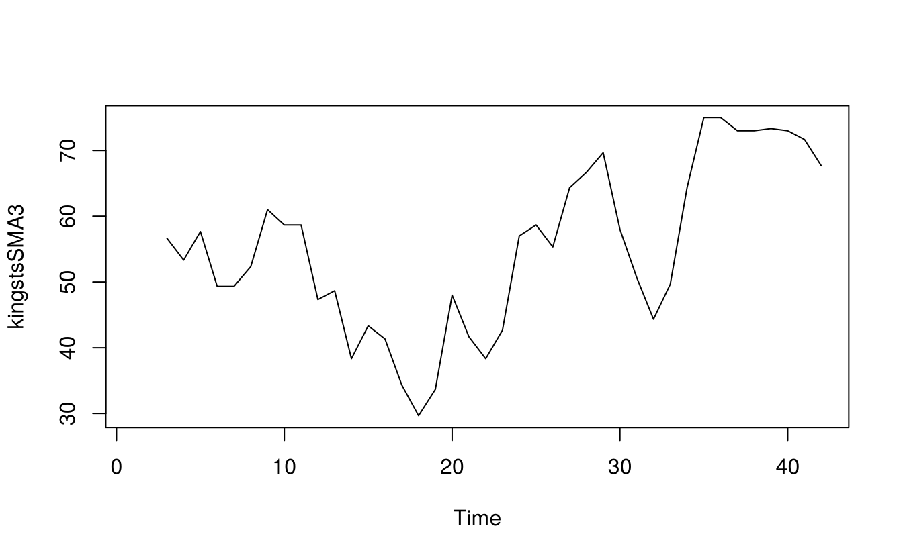
A moving average of order 3 still leaves a lot of random fluctuation. A higher order gives a smoother trend; finding the right amount of smoothing needs some trial and error. With order 8:
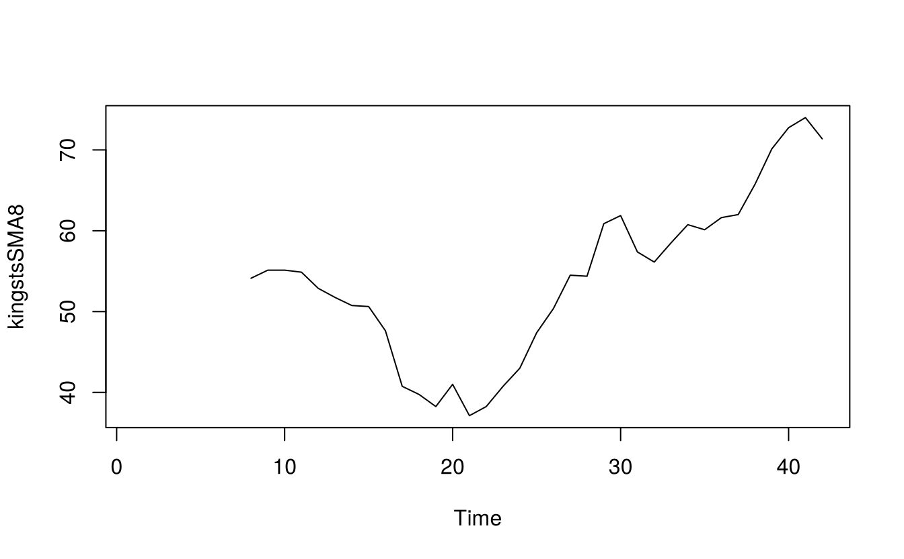
The smoothed series suggests that the age at death fell from about 55 years for the early kings to about 38 years around the 20th king, and then rose to about 73 years by the 40th king.
23.4.2 Decomposing seasonal data
decompose() estimates the trend (with a centred moving average), the seasonal and the irregular components of a seasonal series:
birthstscomp <- decompose(birthsts)The result is a list with elements seasonal, trend and random. The estimated seasonal effects for January to December are:
round(birthstscomp$figure, 3)#> [1] -0.677 -2.083 0.863 -0.802 0.252 -0.153 1.456 1.165 0.692 0.775
#> [11] -1.110 -0.377July has the largest seasonal effect (about +1.46 thousand births above the trend) and February the smallest (about −2.08), so births peak in summer and are lowest in February.
plot(birthstscomp)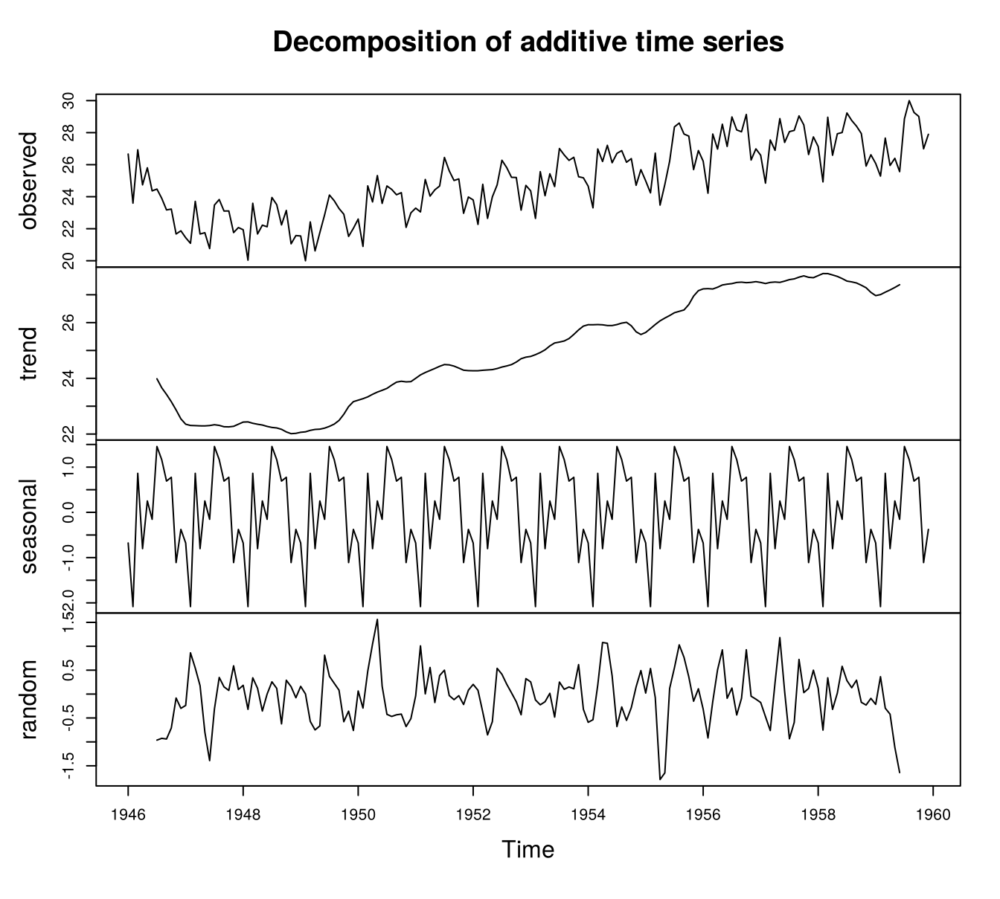
The panels show, from top to bottom, the observed series, the trend, the seasonal component and the irregular component. The trend falls slightly from about 22.4 thousand in early 1947 to about 22.0 thousand at the end of 1948, and then rises steadily to about 27 thousand by 1959.
23.5 Seasonally adjusting a time series
If a seasonal series follows an additive model, it can be seasonally adjusted by subtracting the estimated seasonal component:
birthstsadj <- birthsts - birthstscomp$seasonal
plot(birthstsadj, ylab = "Seasonally adjusted births")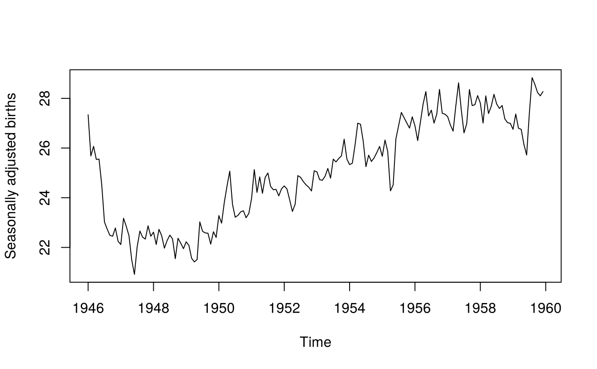
The adjusted series contains only the trend and irregular components, which makes it easier to see whether births are increasing or decreasing. For a multiplicative series, decompose with decompose(x, type = "multiplicative") and divide by the seasonal component instead.
23.6 Forecasting with exponential smoothing
Exponential smoothing, introduced by R. G. Brown (1956) and extended by C. C. Holt (1957) and P. R. Winters (1960), makes short-term forecasts from a weighted average of past observations in which the weights decrease exponentially with age. It is reliable for short horizons; long-term forecasts can be poor.
The smoothing constant \(\alpha\) (\(0 \le \alpha \le 1\)) controls how fast the weights decay:
- \(\alpha\) close to 1: little smoothing; the forecast follows the most recent observations closely.
- \(\alpha\) close to 0: heavy smoothing; the forecast depends on many past observations, each receiving a small weight.
R chooses the smoothing constants that minimise the sum of squared one-step-ahead forecast errors.
23.6.1 Types of exponential smoothing
1. Simple exponential smoothing — for series with no trend and no seasonality.
\[F_{t+1} = \alpha Y_t + (1 - \alpha) F_t\]
where \(F_{t+1}\) is the forecast for the next period, \(Y_t\) the observation at time \(t\) and \(F_t\) the forecast for time \(t\). Repeated substitution shows that the weight on the observation \(j\) periods ago is \(\alpha(1-\alpha)^j\).
2. Holt’s linear (trend) method — for series with a trend but no seasonality. It has a level \(\ell_t\) with smoothing constant \(\alpha\), and a slope \(b_t\) with smoothing constant \(\beta\):
\[\ell_t = \alpha Y_t + (1 - \alpha)(\ell_{t-1} + b_{t-1})\] \[b_t = \beta(\ell_t - \ell_{t-1}) + (1 - \beta) b_{t-1}\] \[F_{t+h} = \ell_t + h\,b_t\]
3. Holt–Winters method — for series with trend and seasonality of period \(m\), with a third smoothing constant \(\gamma\) for the seasonal component \(s_t\).
Additive seasonality (seasonal swings of constant size):
\[\ell_t = \alpha (Y_t - s_{t-m}) + (1 - \alpha)(\ell_{t-1} + b_{t-1})\] \[b_t = \beta(\ell_t - \ell_{t-1}) + (1 - \beta) b_{t-1}\] \[s_t = \gamma (Y_t - \ell_t) + (1 - \gamma) s_{t-m}\] \[F_{t+h} = \ell_t + h\,b_t + s_{t+h-m}\]
Multiplicative seasonality (seasonal swings proportional to the level):
\[\ell_t = \alpha \frac{Y_t}{s_{t-m}} + (1 - \alpha)(\ell_{t-1} + b_{t-1})\] \[b_t = \beta(\ell_t - \ell_{t-1}) + (1 - \beta) b_{t-1}\] \[s_t = \gamma \frac{Y_t}{\ell_t} + (1 - \gamma) s_{t-m}\] \[F_{t+h} = (\ell_t + h\,b_t)\, s_{t+h-m}\]
In the forecast equations, \(s_{t+h-m}\) is the most recent estimate of the seasonal effect for the season being forecast (for \(h > m\), use \(s_{t+h-km}\) with \(k\) the smallest integer such that \(h \le km\)).
All three methods are fitted with HoltWinters(): set gamma = FALSE for Holt’s method, and both beta = FALSE, gamma = FALSE for simple exponential smoothing. Use seasonal = "multiplicative" for multiplicative Holt–Winters.
23.6.2 Simple exponential smoothing
plot.ts(rainseries, ylab = "Rainfall (inches)")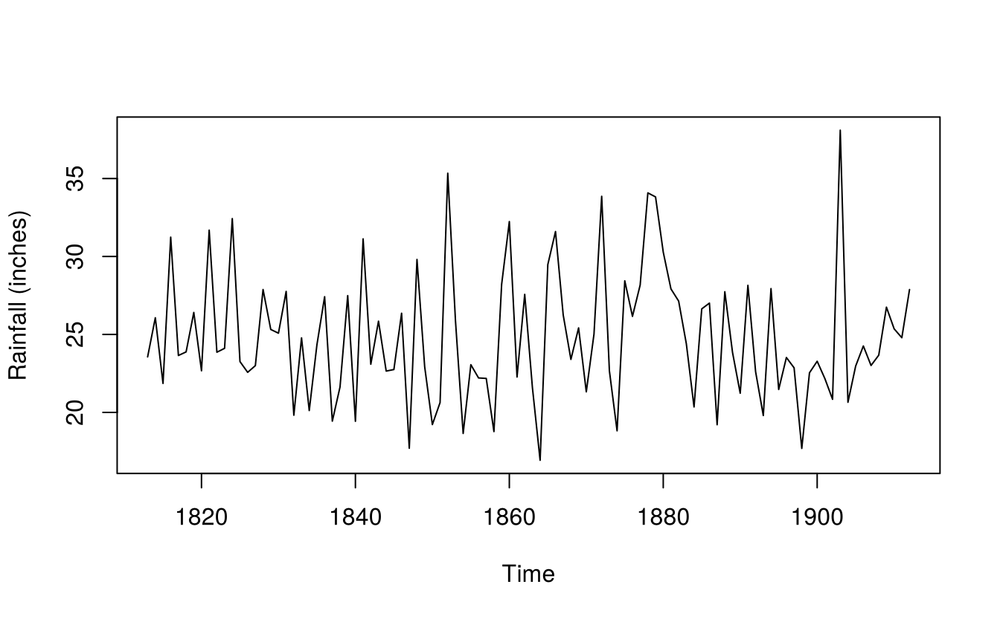
The mean stays roughly constant at about 25 inches and the random fluctuations are roughly constant in size, so an additive model with no trend and no seasonality is appropriate. We can therefore forecast with simple exponential smoothing:
rainforecast <- HoltWinters(rainseries, beta = FALSE, gamma = FALSE)
rainforecast#> Holt-Winters exponential smoothing without trend and without seasonal component.
#>
#> Call:
#> HoltWinters(x = rainseries, beta = FALSE, gamma = FALSE)
#>
#> Smoothing parameters:
#> alpha: 0.02412
#> beta : FALSE
#> gamma: FALSE
#>
#> Coefficients:
#> [,1]
#> a 24.68The estimated \(\alpha\) is about 0.024, which is very close to zero. The forecasts therefore give almost equal weight to recent and distant observations: each new observation moves the level only slightly, so the forecast is essentially a long-run average of the series. This makes sense for a series with no trend whose fluctuations are mostly random.
By default HoltWinters() computes in-sample forecasts for the period covered by the data. They are stored in the fitted element:
head(rainforecast$fitted)#> xhat level
#> [1,] 23.56 23.56
#> [2,] 23.62 23.62
#> [3,] 23.58 23.58
#> [4,] 23.76 23.76
#> [5,] 23.76 23.76
#> [6,] 23.76 23.76Plot the original series (black) against the in-sample forecasts (red):
plot(rainforecast)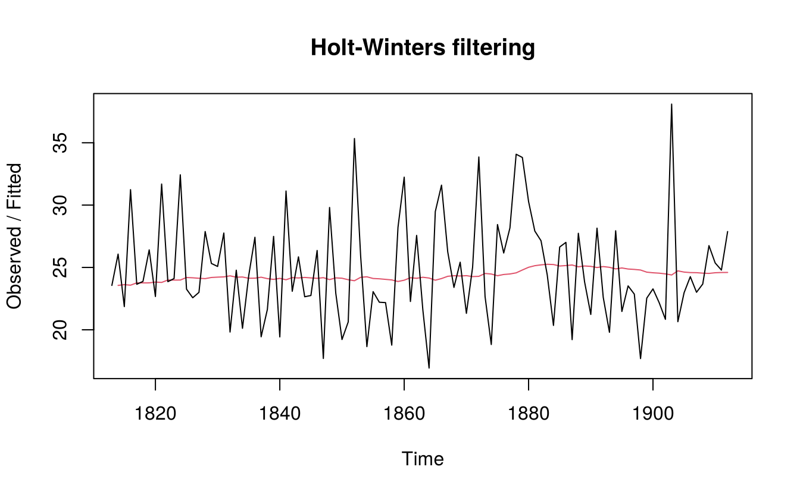
The forecasts are much smoother than the data. The accuracy of the in-sample forecasts is measured by the sum of squared errors (SSE):
rainforecast$SSE#> [1] 1829In simple exponential smoothing the starting level is by default the first observation, 23.56 inches for 1813. It can be set explicitly with l.start:
rainforecast2 <- HoltWinters(rainseries, beta = FALSE, gamma = FALSE, l.start = 23.56)
rainforecast2$SSE#> [1] 1829Here the SSE is unchanged, because 23.56 is already the default starting value. A different l.start would give a different SSE.
23.6.2.1 Forecasting future values
Forecasts beyond the data are made with forecast() from the forecast package (R. Hyndman et al. 2023). Here we forecast rainfall for 1913–1920 (8 years):
#> Point Forecast Lo 80 Hi 80 Lo 95 Hi 95
#> 1913 24.68 19.17 30.18 16.26 33.09
#> 1914 24.68 19.17 30.18 16.26 33.10
#> 1915 24.68 19.17 30.18 16.26 33.10
#> 1916 24.68 19.17 30.19 16.25 33.10
#> 1917 24.68 19.17 30.19 16.25 33.10
#> 1918 24.68 19.17 30.19 16.25 33.11
#> 1919 24.68 19.17 30.19 16.25 33.11
#> 1920 24.68 19.16 30.19 16.24 33.11
plot(rainforecast8)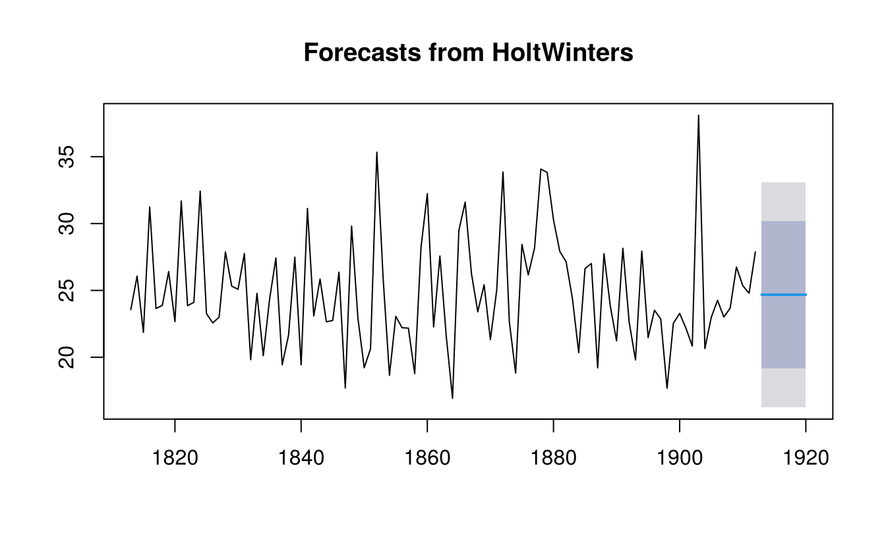
The point forecast is 24.68 inches for every year, with 80% and 95% prediction intervals (the dark and light shaded bands).
23.6.2.2 Checking the forecast errors
If the model is adequate, the forecast errors (residuals) should show no autocorrelation, have constant variance and be roughly normally distributed with mean zero. The autocorrelation function (ACF) and the Ljung–Box test check the first condition:
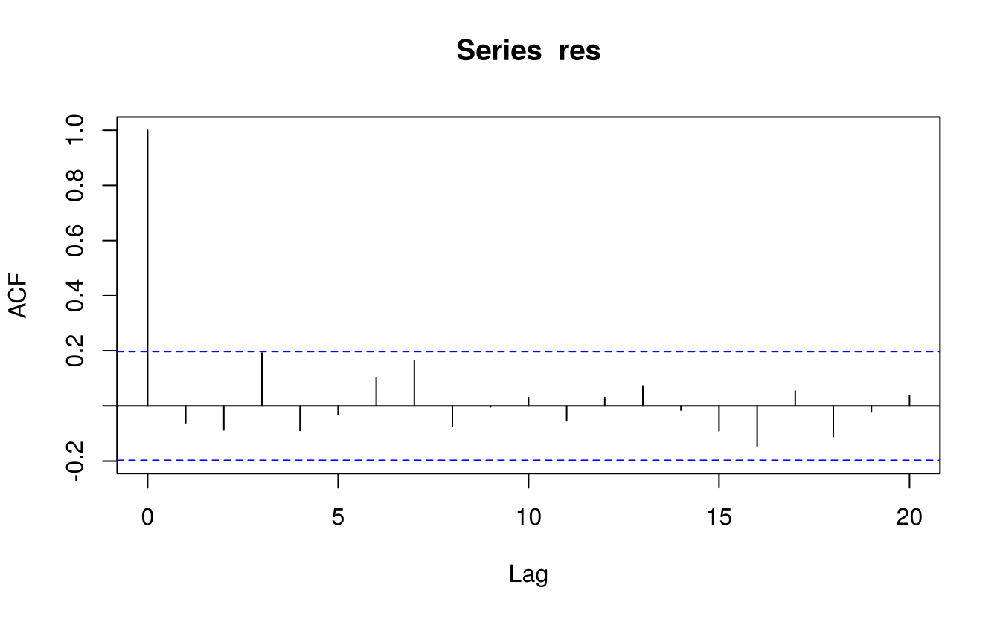
Box.test(res, lag = 20, type = "Ljung-Box")#>
#> Box-Ljung test
#>
#> data: res
#> X-squared = 17, df = 20, p-value = 0.6No autocorrelation falls outside the significance bounds except by chance, and the Ljung–Box test is not significant (p ≈ 0.63). There is therefore little evidence of autocorrelation in the forecast errors, and simple exponential smoothing provides an adequate forecasting model for London rainfall.
hist(res, breaks = 15, freq = FALSE, col = "grey90", main = "Forecast errors")
curve(dnorm(x, mean(res), sd(res)), add = TRUE, col = "red", lwd = 2)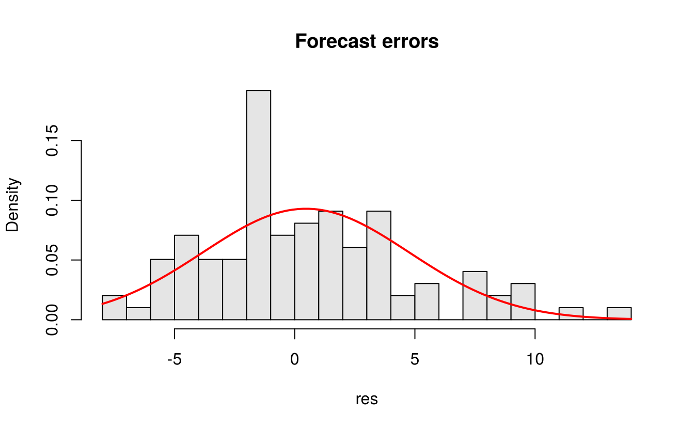
23.6.3 Holt’s exponential smoothing
For a series with a trend but no seasonality we use Holt’s method. The built-in airmiles data give the annual revenue passenger miles flown by US commercial airlines, 1937–1960, which has a strong upward trend:
plot(airmiles, ylab = "Passenger miles (thousands)")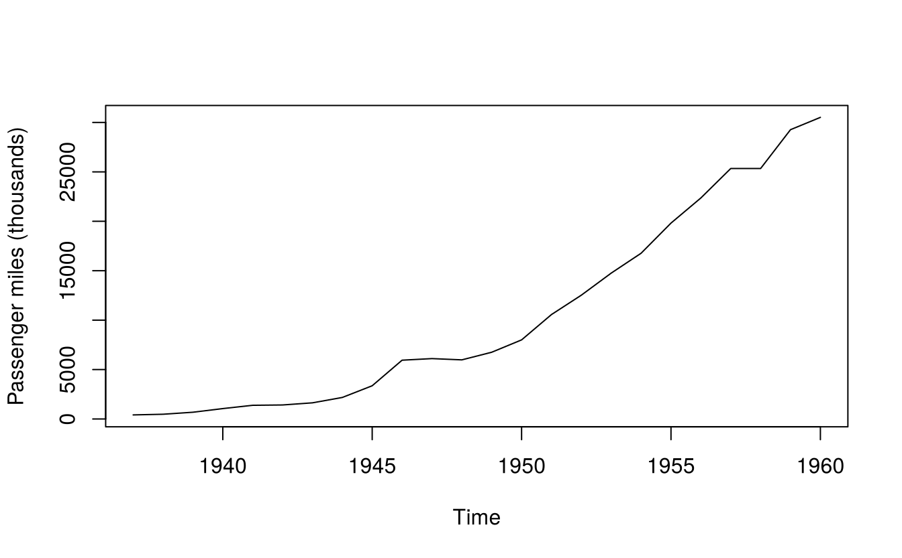
airholt <- HoltWinters(airmiles, gamma = FALSE)
airholt#> Holt-Winters exponential smoothing with trend and without seasonal component.
#>
#> Call:
#> HoltWinters(x = airmiles, gamma = FALSE)
#>
#> Smoothing parameters:
#> alpha: 0.8073
#> beta : 0.3896
#> gamma: FALSE
#>
#> Coefficients:
#> [,1]
#> a 30669
#> b 2101The estimate \(\alpha \approx 0.81\) means the level follows the most recent observations closely, and \(\beta \approx 0.39\) means the slope is updated moderately quickly.
airholtf <- forecast(airholt, h = 4)
airholtf#> Point Forecast Lo 80 Hi 80 Lo 95 Hi 95
#> 1961 32769 31429 34110 30719 34820
#> 1962 34870 32855 36885 31789 37951
#> 1963 36971 34184 39757 32708 41233
#> 1964 39071 35427 42715 33499 44644
plot(airholtf)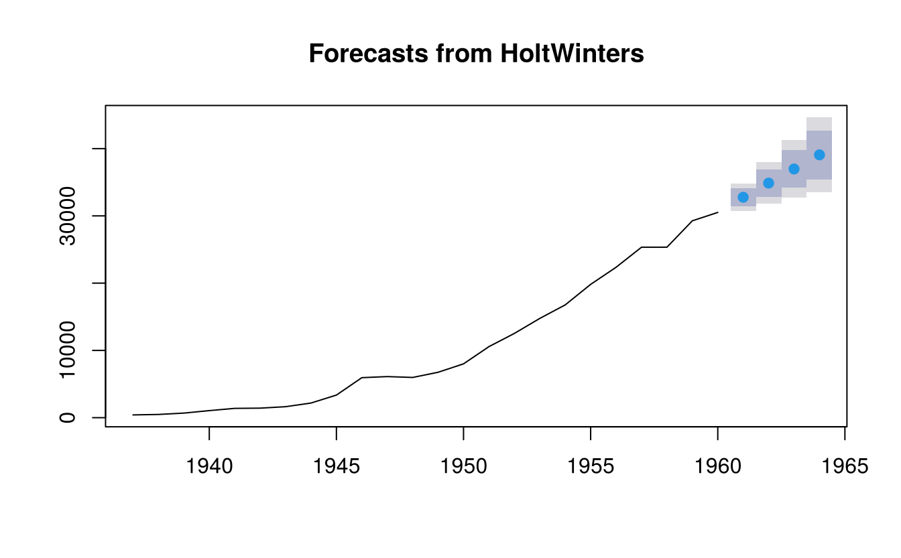
23.6.4 Holt–Winters exponential smoothing
For a series with trend and seasonality we use the full Holt–Winters method. We model the log of the souvenir sales, which follows an additive model:
souvenirhw <- HoltWinters(logsouvenirts)
souvenirhw#> Holt-Winters exponential smoothing with trend and additive seasonal component.
#>
#> Call:
#> HoltWinters(x = logsouvenirts)
#>
#> Smoothing parameters:
#> alpha: 0.4134
#> beta : 0
#> gamma: 0.9561
#>
#> Coefficients:
#> [,1]
#> a 10.37662
#> b 0.02996
#> s1 -0.80952
#> s2 -0.60576
#> s3 0.01103
#> s4 -0.24161
#> s5 -0.35934
#> s6 -0.18077
#> s7 0.07789
#> s8 0.10147
#> s9 0.09649
#> s10 0.05198
#> s11 0.41794
#> s12 1.18088The estimates are \(\alpha \approx 0.41\), \(\beta = 0\) and \(\gamma \approx 0.96\). The value \(\beta = 0\) means the slope is not updated: it keeps its initial value throughout. The high \(\gamma\) means the seasonal effects are based mainly on the most recent observations.
plot(souvenirhw)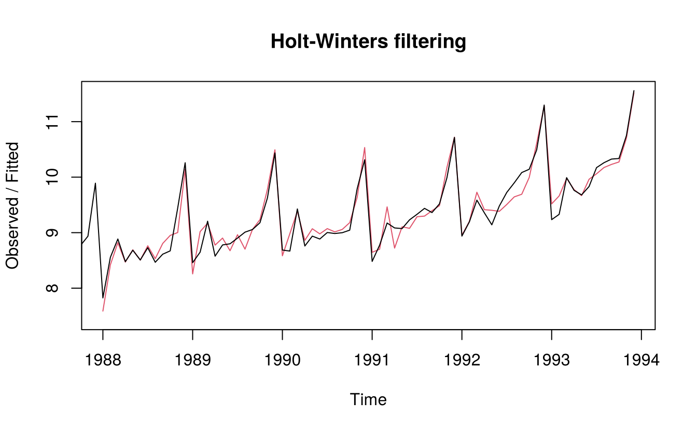
Forecast the next 12 months (1994) and back-transform with exp() to get sales:
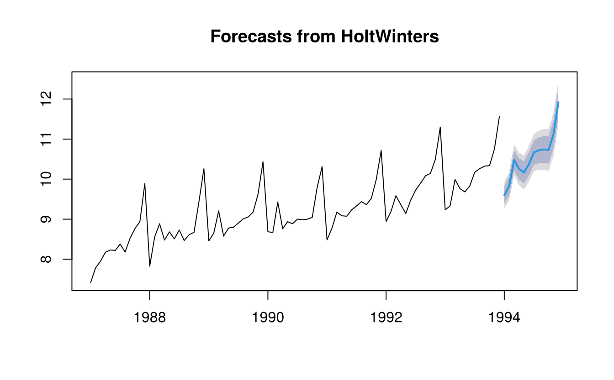
#> Jan Feb Mar Apr May Jun Jul Aug Sep Oct
#> 1994 14721 18597 35509 28421 26032 32069 42798 45152 46295 45626
#> Nov Dec
#> 1994 67789 149801The forecasts reproduce the seasonal pattern, with the highest sales in December.
#>
#> Box-Ljung test
#>
#> data: residuals(souvenirf)
#> X-squared = 18, df = 20, p-value = 0.6The Ljung–Box test is not significant (p ≈ 0.62), so the Holt–Winters model fits adequately.
23.7 ARIMA models
Exponential smoothing makes no assumption about correlation between successive values. ARIMA (autoregressive integrated moving average) models describe that correlation explicitly. An ARIMA(\(p,d,q\)) model has \(p\) autoregressive terms, \(d\) differences and \(q\) moving-average terms; seasonal ARIMA models add seasonal terms ARIMA(\(P,D,Q\))\(_m\).
The orders can be chosen by examining the ACF and partial ACF of the differenced series, or automatically with auto.arima(), which compares candidate models by AICc:
kingsarima <- auto.arima(kingsts)
kingsarima#> Series: kingsts
#> ARIMA(0,1,1)
#>
#> Coefficients:
#> ma1
#> -0.722
#> s.e. 0.121
#>
#> sigma^2 = 236: log likelihood = -170.1
#> AIC=344.1 AICc=344.4 BIC=347.6An ARIMA(0,1,1) model is selected for the kings data: the series is differenced once and the differences follow a first-order moving-average process. Forecast the age at death of the next five kings:
kingsf <- forecast(kingsarima, h = 5)
kingsf#> Point Forecast Lo 80 Hi 80 Lo 95 Hi 95
#> 43 67.75 48.05 87.45 37.63 97.87
#> 44 67.75 47.31 88.19 36.48 99.02
#> 45 67.75 46.58 88.92 35.38 100.12
#> 46 67.75 45.89 89.61 34.31 101.19
#> 47 67.75 45.21 90.29 33.28 102.22
plot(kingsf)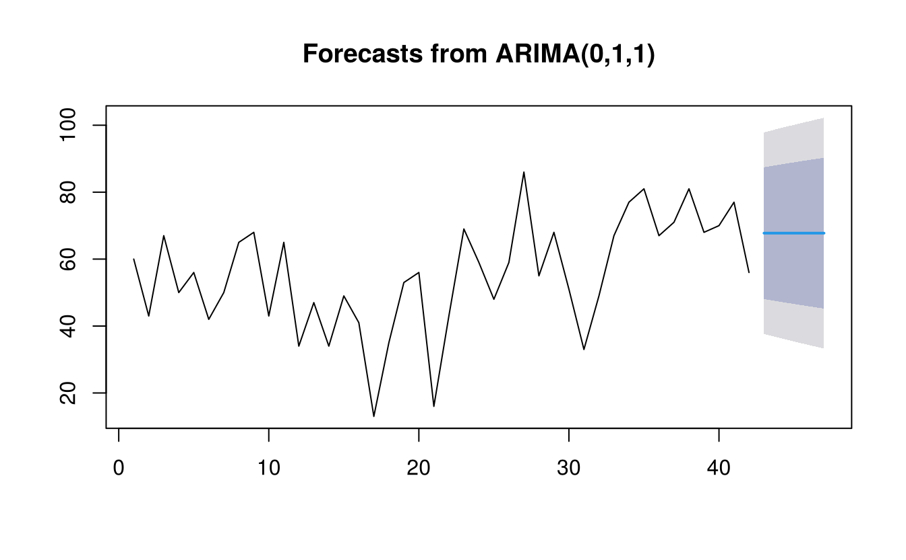
#>
#> Box-Ljung test
#>
#> data: residuals(kingsf)
#> X-squared = 14, df = 20, p-value = 0.9For a seasonal series, auto.arima() also selects the seasonal part. For the monthly births:
auto.arima(birthsts)#> Series: birthsts
#> ARIMA(2,1,2)(1,1,1)[12]
#>
#> Coefficients:
#> ar1 ar2 ma1 ma2 sar1 sma1
#> 0.654 -0.454 -0.726 0.253 -0.243 -0.845
#> s.e. 0.300 0.243 0.323 0.288 0.099 0.099
#>
#> sigma^2 = 0.408: log likelihood = -157.4
#> AIC=328.9 AICc=329.7 BIC=350.2Always check the residuals of a fitted model (checkresiduals() in the forecast package does this in one step). A good model leaves residuals that look like uncorrelated random noise. For a thorough introduction to ARIMA modelling see Chapters 8–9 of R. J. Hyndman and Athanasopoulos (2021).
Exercises
- The built-in
co2data set gives monthly atmospheric CO2 concentrations at Mauna Loa, 1959–1997. Plot the series, decompose it and describe the trend and seasonal pattern. - Seasonally adjust the
co2series and plot the adjusted series. - Fit a Holt–Winters model to
co2and forecast the next 24 months. Check the residuals. - Fit an ARIMA model to the London rainfall series with
auto.arima(). Compare its forecasts with those from simple exponential smoothing.